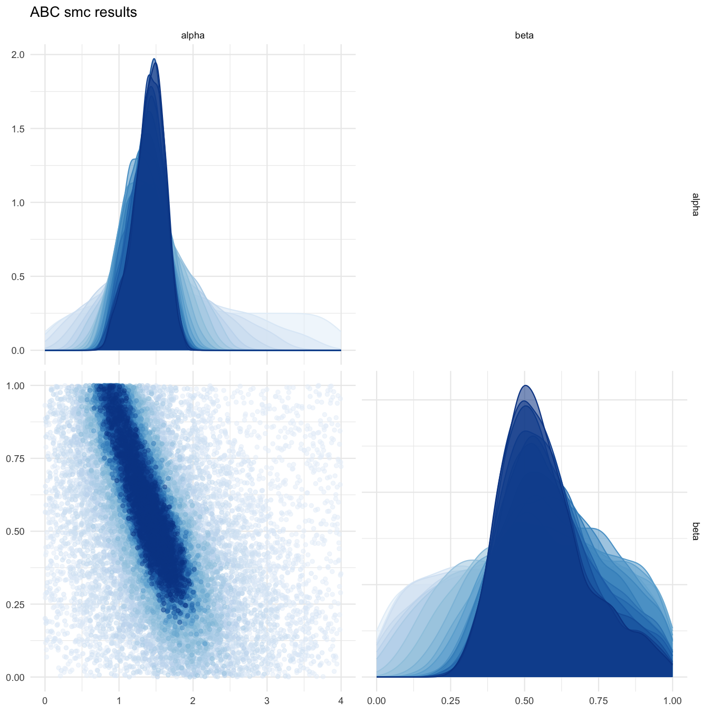
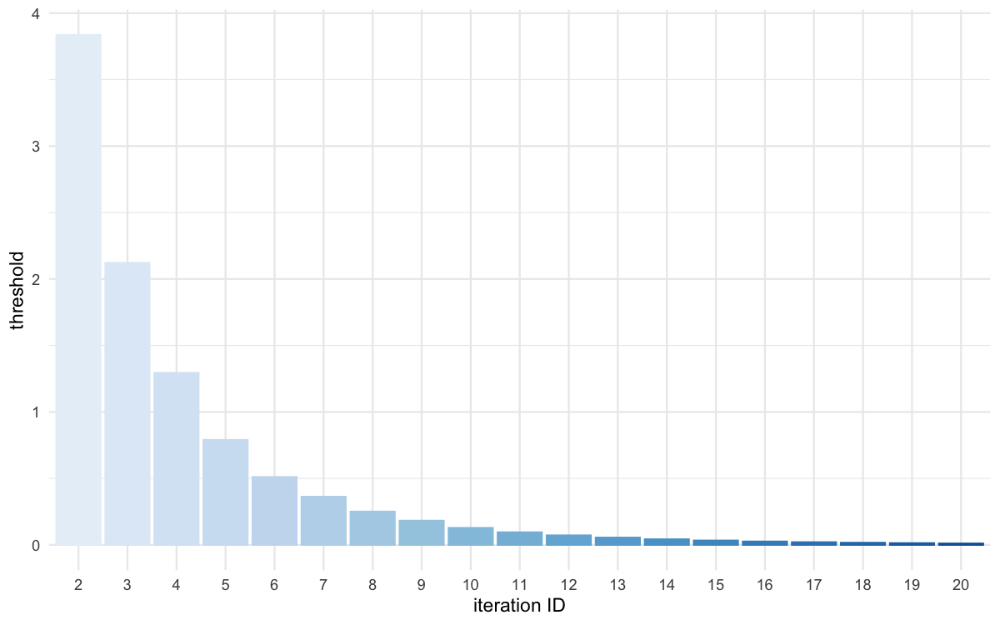
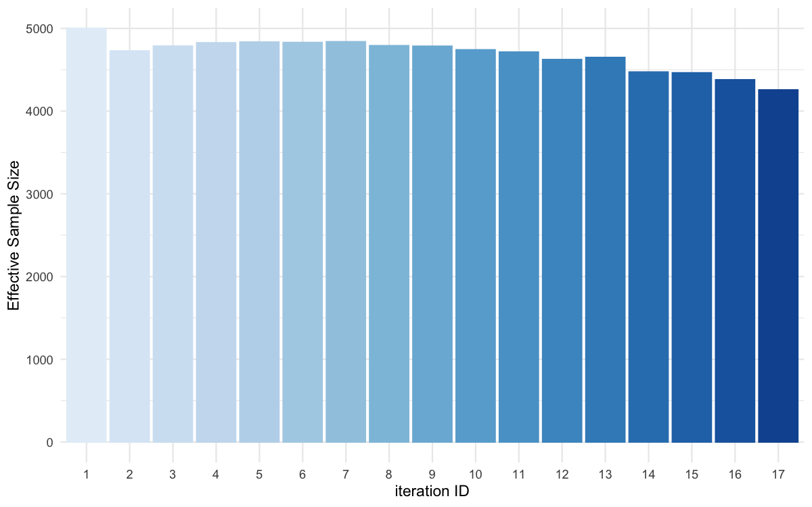
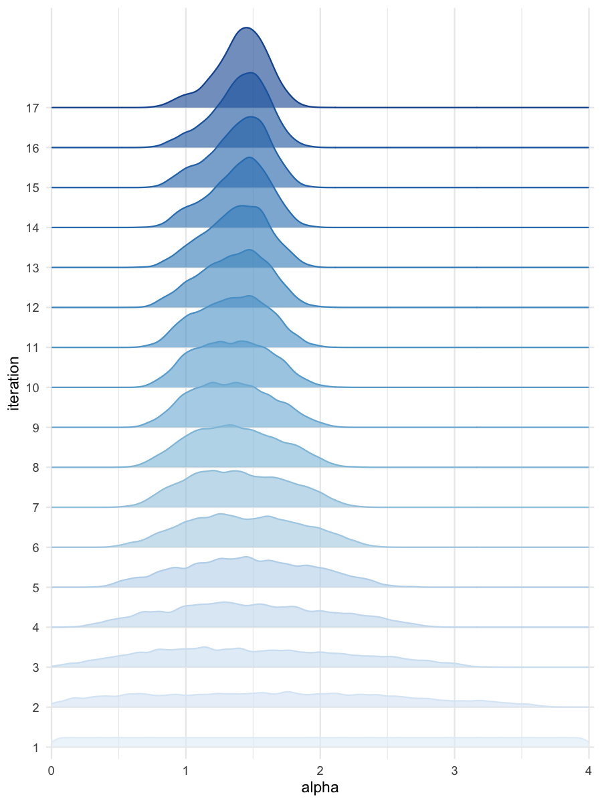
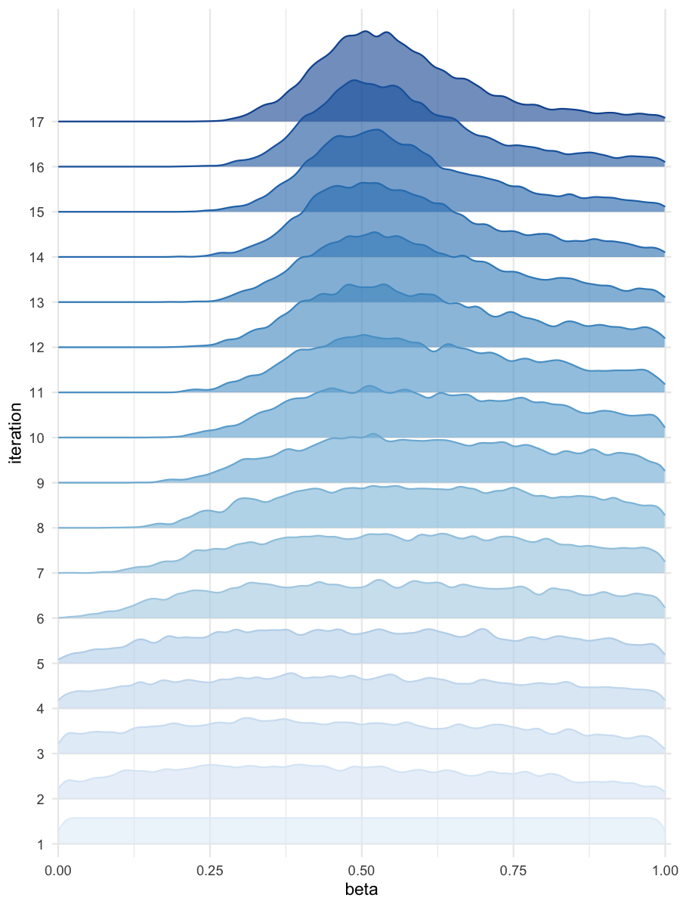

Running an ABC-SMC procedure on a cluster (SGE)
Source:vignettes/running-an-abc-smc-procedure-on-a-cluster-sge.Rmd
running-an-abc-smc-procedure-on-a-cluster-sge.RmdTo run the ABC-SMC procedure on a cluster, the package has to be installed on the cluster first, and you need two files : (1) a R script containing the code use to run the inference, and (2) a bash script use to launch the master job on the cluster.
-
abc-smc_on_sge_cluster.R:
library(BRREWABC)
# Model definition
compute_dist <- function(x, ss_obs) {
ss_sim <- c(x[["alpha"]] + x[["beta"]] + rnorm(1, 0, 0.1),
x[["alpha"]] * x[["beta"]] + rnorm(1, 0, 0.1))
dist <- sum((ss_sim - ss_obs)^2)
return(c(dist))
}
model_list <- list("m1" = compute_dist)
# Define prior distribution
prior_dist <- list("m1" = list(c("alpha", "unif", 0, 4),
c("beta", "unif", 0, 1)))
# Create a reference trajectory
sum_stat_obs <- c(2.0, 0.75)
# Run abc smc procedure
res <- abcsmc(model_list = model_list,
prior_dist = prior_dist,
ss_obs = sum_stat_obs,
max_number_of_gen = 30,
nb_acc_prtcl_per_gen = 5000,
new_threshold_quantile = 0.75,
experiment_folderpath = "smploncluster",
max_concurrent_jobs = 100,
verbose = TRUE,
on_cluster = TRUE,
cluster_type = "sge")
# Plot results
all_accepted_particles <- res$particles
all_thresholds <- res$thresholds
plot_abcsmc_res(data = all_accepted_particles, prior = prior_dist,
filename = "smploncluster/res/figs/smploncluster_pairplot_all.png", colorpal = "Blues")
plot_thresholds(data = all_thresholds, nb_threshold = 1,
filename = "smploncluster/res/figs/smploncluster_thresholds.png", colorpal = "Blues")
plot_ess(data = all_accepted_particles,filename = "smploncluster/res/figs/smploncluster_ess.png", colorpal = "Blues")
plot_densityridges(data = all_accepted_particles, prior = prior_dist,
filename = "smploncluster/res/figs/smploncluster_densityridges.png", colorpal = "Blues")-
launch_abc-smc_on_sge_cluster.sh:
#!/bin/bash
#$ -S /bin/bash
#$ -N abcsmc_prlll
#$ -q "long.q"
#$ -cwd
#$ -V
Rscript abc-smc_on_sge_cluster.RThen launch the master job on the sge cluster:
qsub launch_abc-smc_on_sge_cluster.sh.

Pairplot of all iterations

Threshold evolution over iterations

ESS evolution over iterations

Density estimates for alpha

Density estimates for beta